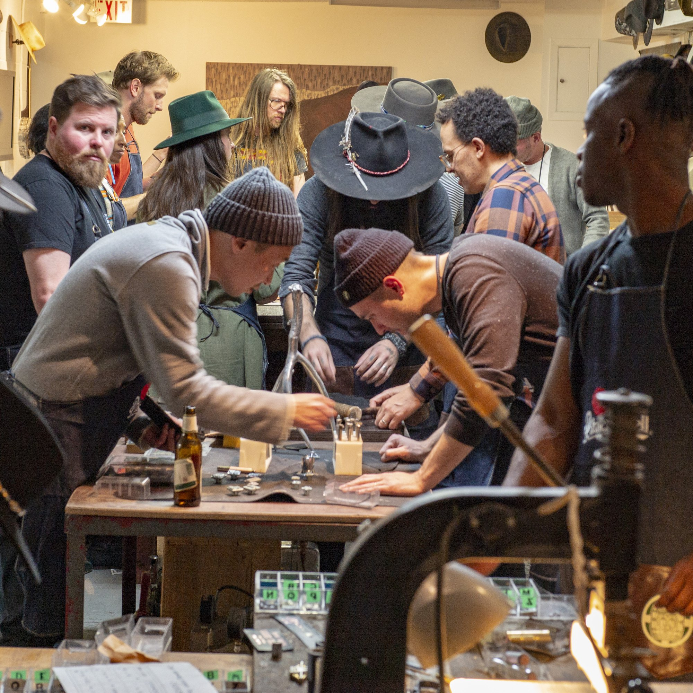
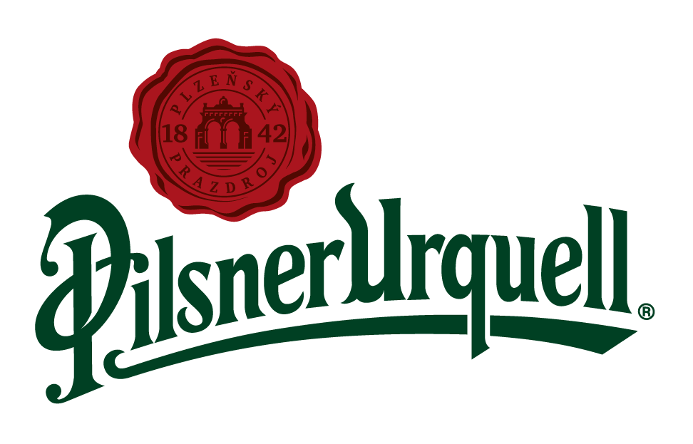
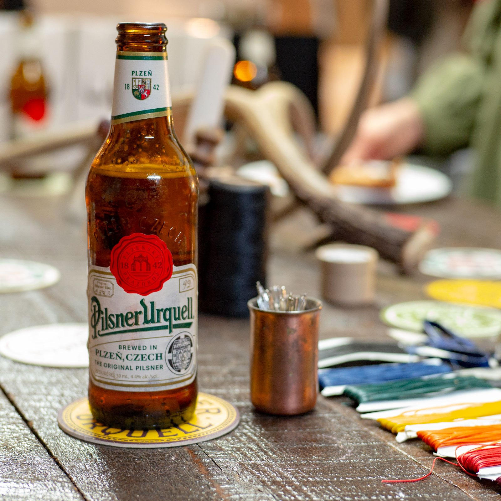
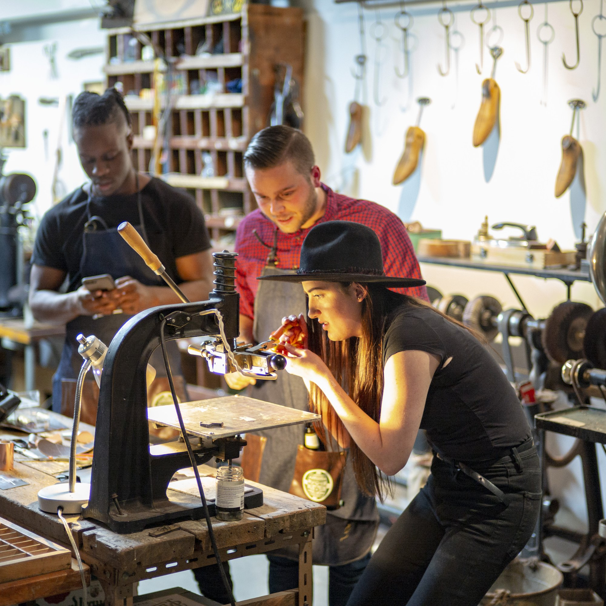
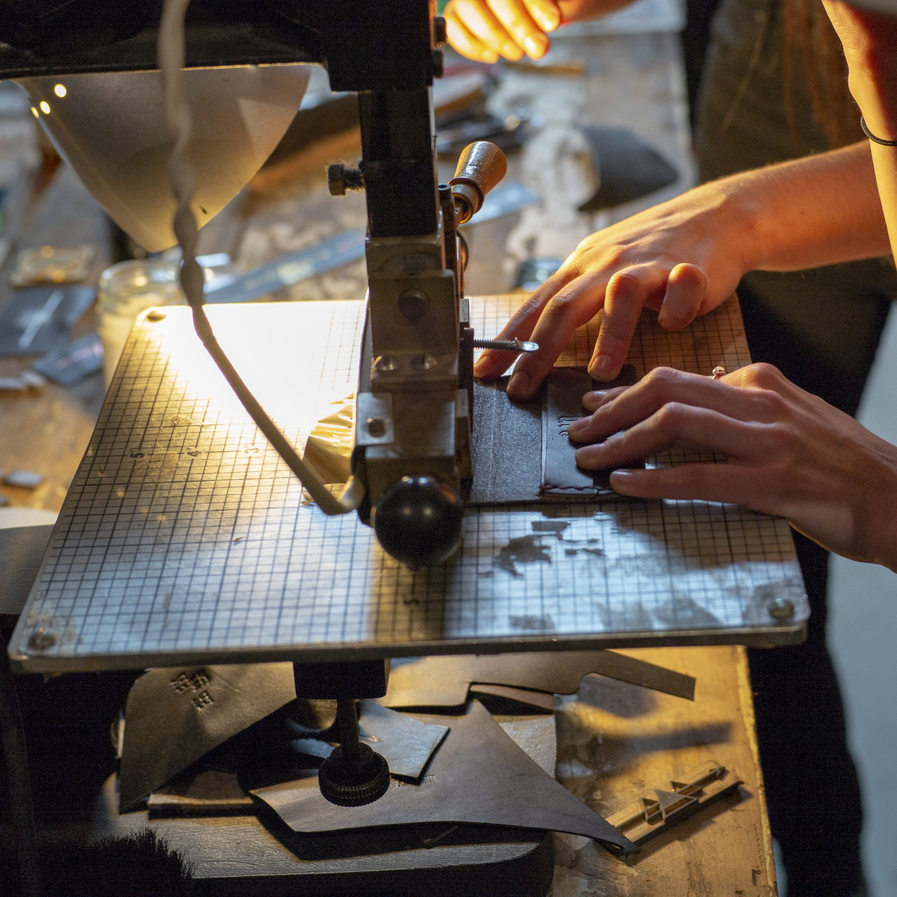

the original pilsner needed local momentum.
We built it block by block.
An iconic beer with too little local on-premise momentum.
Build relevance inside two neighbourhoods, not around them.
Event partnerships, patios, retail, social and live merchandise.
Fifteen new listings - three times the original target.
heritage travels. relevance has to be earned locally.
Pilsner Urquell invented the category, but history alone was not creating enough orders, listings or energy in Toronto.
The job was not to reinvent the beer. It was to give the right people a reason to choose it in the places where they already gathered.
Independent bars, restaurants and a street festival with neighbourhood gravity.
A dense corridor of culturally connected venues and people willing to try something better.
don’t interrupt the neighbourhood. pour into it.
We made Pilsner Urquell the official beer partner of OssFest and the Dundas West Fest, then built a system that worked from the street to the bar.
The idea was practical: use local partnerships to create demand, then give venues and the sales team everything needed to convert that interest into listings.

Two corridors. Two festivals. One brand showing up like it belonged there.
make the activation worth lining up for.
Live-printed shirts became festival keepsakes. Extended patios, exclusive offers, POS and social gave the beer a consistent role before, during and after the events.
live craft
Shirts were printed live at the event, turning branded merchandise into something people watched, chose and kept.
venue support
Sell sheets, patio programs, pricing and POS helped the sales story continue inside the neighbourhood’s bars.
community signal
Festival partnerships made the brand visible through participation rather than another detached media buy.



local relevance turned into local demand.
The program did more than create a busy event footprint. It exceeded the listing target, moved merchandise and created enough demand to empty shelves.
an iconic brand became part of the neighbourhood again.
build local demandStrategy · event partnerships · on-premise activation · retail · social · live merchandise
Under $15K per event, excluding owned sampling assets.
 →
→